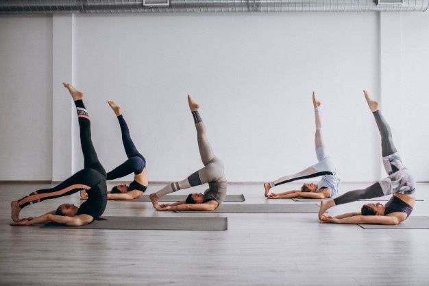
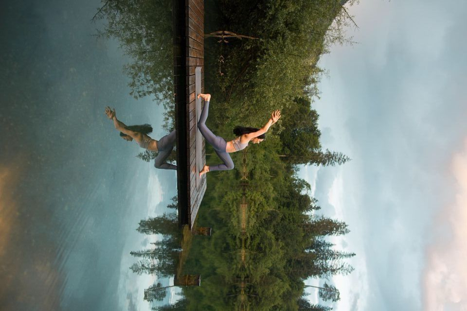

Progress Tracker for YB

Flows
- Power Yoga Practice

- Shakti Yoga Practice

- Yoga pentru mâini/degete

- 5 minute de stretch

- Feel your best

- Core and booty - 30 min

- Reunire cu centrul

- Program: Ziua 1 (SET)

- Program: Ziua 2 (NOTICE)

- 50 min Interm Power Practice

- Yoga pentru dureri de spate

- Yoga pentru dureri de spate (PARTEA SUPERIOARĂ)

- Yoga pentru lipsa motivație (20 min)

- Yoga pentru coloană

- Tension relief (28 min)

- Șolduri și spate

- Yoga în 2

- Movement medicine/calmare

- Hands free practice

- Dans/Yoga flow

- Brain power practice

Poses
- Sukhasana

- Baddha Konasana

- Mountain/Tadasana

- Cat-cow/Marjaryasana-Bitilasana

- Forward fold/Uttanasana

- Tree pose/Vrksasana

- Băț/Yashtikasana

- Lounge/Utthita Ashwa Sanchalanasana

- Plank/Phalakasana

- Extended Child/

- Downward Dog/Adho Mukha Svanasana

- Corpse/Savasana

- Camel/Ustrasana

- Hero/Virasana